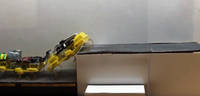
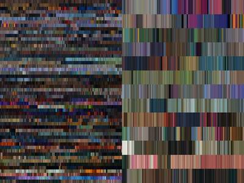

2016-05-19 - Nº 55

Editorial
Esta é a Newsletter Nº 55 que se apresenta com o mesmo formato que as anteriores. Se gostar da Newsletter partilhe-a!
Todas as Newsletters encontram-se indexadas no link.
Esta Newsletter tem os seguintes tópicos:
Nesta semana começou o Google IO 2016 onde foi apresentado um processador desenhado pela Google. Trata-se de um ASIC que é um Tensor Processing Unit (TPU) construído para machine learning. Por sua vez a Amazon, estendeu o conceito do seu Dash Button criando um AWS IoT Button que é programável para fazer o que se entender quando é premido. A Nordic Semiconductor desenvolveu uma nova placa Arduino designada por Primo que incorpora BLE (Bluetooth Low Energy), Wi-Fi, NFC e IR. A NASA lançou um SPB (Balão de Alta Pressão) na Nova Zelândia para um volta ao mundo. O objectivo é testar este tipo de balões para ver se aguenta as condições de uma viagem longa em altitudes médias.
Na Newsletter desta semana apresentamos diversos projetos de maker. Na rubrica "Documentação" apresentamos oito livros (eBooks) que podem ser descarregados livremente e que esta semana são sobre Introdução ao R, Aprender a programar com Python, Sinais e Sistemas, Sistemas de Comunicação, Estruturas de Dados e Aanlise Algoritmica em Java e C++, Python intermédio e GNU/Linux Basic.
 João Alves ([email protected])
João Alves ([email protected])
O conteúdo da Newsletter encontra-se sob a licença  Creative Commons Attribution-NonCommercial-ShareAlike 4.0 International License.
Creative Commons Attribution-NonCommercial-ShareAlike 4.0 International License.
Novidades da Semana ^
-
"The AWS IoT Button is a programmable button based on the Amazon Dash Button hardware. This simple Wi-Fi device is easy to configure and designed for developers to get started with AWS IoT, AWS Lambda, Amazon DynamoDB, Amazon SNS, and many other Amazon Web Services without writing device-specific code. You can code the button's logic in the cloud to configure button clicks to count or track items, call or alert someone, start or stop something, order services, or even provide feedback. For example, you can click the button to unlock or start a car, open your garage door, call a cab, call your spouse or a customer service representative, track the use of common household chores, medications or products, or remotely control your home appliances."
"Nordic Semiconductor today announces that Arduino – the world’s most successful open-source ecosystem for education, Maker, and Internet of Things (IoT) markets – has specified the Nordic Semiconductor nRF52832 Bluetooth® low energy (previously known as Bluetooth Smart) System-on-Chip (SoC) at the heart of its latest product: a low cost IoT-targeted programmable single board computer (or ‘base board’) called the ‘Arduino Primo’. The Arduino Primo base board features native Bluetooth low energy wireless connectivity and also includes Near Field Communication (NFC), Wi-Fi and infrared (IR) technologies. Previously users were required to add shields – plug-in daughter boards offering additional functionality – to the base board to upgrade to Bluetooth low energy wireless connectivity."
NASA Super Pressure Balloon Begins Globetrotting Journey
"NASA successfully launched a super pressure balloon (SPB) from Wanaka Airport, New Zealand, at 11:35 a.m. Tuesday, May 17, (7:35 p.m. EDT Monday, May 16) on a potentially record-breaking, around-the-world test flight. The purpose of the flight is to test and validate the SPB technology with the goal of long-duration flight (100+ days) at mid-latitudes. In addition, the gondola is carrying the Compton Spectrometer and Imager (COSI) gamma-ray telescope as a mission of opportunity."
Google supercharges machine learning tasks with TPU custom chip
"Machine learning provides the underlying oomph to many of Google’s most-loved applications. In fact, more than 100 teams are currently using machine learning at Google today, from Street View, to Inbox Smart Reply, to voice search. But one thing we know to be true at Google: great software shines brightest with great hardware underneath. That’s why we started a stealthy project at Google several years ago to see what we could accomplish with our own custom accelerators for machine learning applications. The result is called a Tensor Processing Unit (TPU), a custom ASIC we built specifically for machine learning — and tailored for TensorFlow. We’ve been running TPUs inside our data centers for more than a year, and have found them to deliver an order of magnitude better-optimized performance per watt for machine learning. This is roughly equivalent to fast-forwarding technology about seven years into the future (three generations of Moore’s Law). TPU is tailored to machine learning applications, allowing the chip to be more tolerant of reduced computational precision, which means it requires fewer transistors per operation. Because of this, we can squeeze more operations per second into the silicon, use more sophisticated and powerful machine learning models and apply these models more quickly, so users get more intelligent results more rapidly. A board with a TPU fits into a hard disk drive slot in our data center racks."
Outras notícias
- 3D Technology has Taken Microchips into Another Dimension
- Tech-Savvy Families Use Home-Built Diabetes Device
- Nest open sources Thread IoT networking protocol
- STMicroelectronics and Autotalks Fuse Satellite Navigation with Vehicle-to-Vehicle and -Infrastructure Communication (V2X)
- Raspbian Update Released With Pi 3 Bluetooth UI, SD Card Copier
- Hyundai shows off its wearable robot Iron Man prototype suit
- Introducing the HP Jet Fusion 3D Printing Solution
- Sony Joins Forces with Cogitai to Conduct Research and Development for the Next Wave of Artificial Intelligence
- HiKey 96Boards powered by Kirin620 SoC is now enabled with the latest Ubuntu Core
- NXP Demonstrates Complete Autonomous Vehicle Platform Using NXP Silicon at Each ADAS Node
- ARM Drives the Future of Premium Mobile Computing with a Multicore Test Chip based on 10FinFET from TSMC
- Arduino STAR OTTO board with STM32F469BIT6 mcu, supports Arduino connectivity
Ciência e Tecnologia ^
Engineers create a better way to boil water with industrial, electronics applications
"Engineers at Oregon State University have found a new way to induce and control boiling bubble formation, that may allow everything from industrial-sized boilers to advanced electronics to work better and last longer."
Two VelociRoACH Robots Cooperatively Climb a Step Taller than Their Size

"Researchers at Biomimetic Millisystems Lab, University of California, Berkeley, have taken inspiration from the cockroach and created a Cockroach-Inspired Robot VelociRoACH (Velocity Robotic Autonomous Crawling Hexapod) and demonstrated that two VelociRoACH robots cooperatively can climb a Step. Researchers will be presenting their research work 'Step Climbing Cooperation Primitives for Legged Robots with a Reversible Connection' in IEEE ICRA conference 2016."
Machine learning helps discover the most luminous supernova in history
"Machine-learning technology developed at Los Alamos National Laboratory played a key role in the discovery of supernova ASASSN-15lh, an exceptionally powerful explosion that was 570 billion times brighter than the sun and more than twice as luminous as the previous record-holding supernova. This extraordinary event marking the death of a star was identified by the All Sky Automated Survey for SuperNovae (ASAS-SN) and is described in a new study published today in Science."
Machine learning accelerates the discovery of new materials
"Researchers recently demonstrated how an informatics-based adaptive design strategy, tightly coupled to experiments, can accelerate the discovery of new materials with targeted properties, according to a recent paper published in Nature Communications."
Scientists Discover New Technology Breakthrough in Fighting Viral Diseases
"As one of medicine's largest challenges, viral infections often escape vaccines due to their natural ability to mutate rapidly and develop drug resistance easily. Many viruses, such as Zika, Ebola and dengue fever, have grown into major global health epidemics with great human and economic toll. Today, IBM Research (NYSE: IBM) and Singapore's Institute of Bioengineering, Nanotechnology (IBN) announced they have identified a new breakthrough macromolecule that could help prevent deadly virus infections with a unique triple-play mechanism that can also help prevent viral drug resistance. The study exploits supramolecular chemistry - the study of large molecules designed with multiple features -- to help combat viral infection. The research is believed to be a first of its kind in fighting viral diseases and IBM Watson, along with such experimental breakthroughs, could help further accelerate drug discovery."
This five-fingered robot hand learns to get a grip on its own
"Robots today can perform space missions, solve a Rubik's cube, sort hospital medication and even make pancakes. But most can't manage the simple act of grasping a pencil and spinning it around to get a solid grip. Intricate tasks that require dexterous in-hand manipulation - rolling, pivoting, bending, sensing friction and other things humans do effortlessly with our hands - have proved notoriously difficult for robots. Now, a University of Washington team of computer scientists and engineers has built a robot hand that can not only perform dexterous manipulation but also learn from its own experience without needing humans to direct it. Their latest results are detailed in a paper to be presented May 17 at the IEEE International Conference on Robotics and Automation."
Documentação ^
A documentação é parte essencial do processo de aprendizagem e a Internet além de artigos interessantes de explorar também tem alguma documentação em formato PDF interessante de ler. Todos os links aqui apresentados são para conteúdo disponibilizado livremente pelo editor do livro.
Livros

-
"This introduction to R is derived from an original set of notes describing the S and S-Plus environments written in 1990–2 by Bill Venables and David M. Smith when at the University of Adelaide. We have made a number of small changes to reflect differences between the R and S programs, and expanded some of the material."
Learning to Program Using Python
"An introduction to computer programming, using the easy, yet powerful, Python programming language. Python, a cross-platform language used by such organizations as Google and NASA, lets you work quickly and efficiently, allowing you to concentrate on your work rather than the language."
-
"This book is about the study of engineering signals and systems, from a discipline-neutral approach. It is a fundamental starting point in the field of engineering, and serves as the basic material that other advanced books in the engineering subject area are based. This book looks at the concepts of systems, serving as an introduction to systems theory. Also, this book examines signals, and the way that signals interact with physical systems. While this book strives to be discipline-neutral, it currently is focused strongly on electrical engineering concepts. It is hoped that this book will be expanded to include information from other disciplines as well."
-
"This book covers a large number of topics in the field of electrical communications. It discusses topics of analog communication schemes, computer programming, network architectures, information infrastructures, communications circuit analysis, and many other topics."
Data Structures & Algorithm Analysis in Java
"With its focus on creating efficient data structures and algorithms, this comprehensive text helps readers understand how to select or design the tools that will best solve specific problems. It uses Java as the programming language and is suitable for second-year data structure courses and computer science courses in algorithm analysis. Techniques for representing data are presented within the context of assessing costs and benefits, promoting an understanding of the principles of algorithm analysis and the effects of a chosen physical medium. The text also explores tradeoff issues, familiarizes readers with the most commonly used data structures and their algorithms, and discusses matching appropriate data structures to applications. The author offers explicit coverage of design patterns encountered in the course of programming the book's basic data structures and algorithms. Numerous examples appear throughout the text."
Data Structures & Algorithm Analysis in C++
"With its focus on creating efficient data structures and algorithms, this comprehensive text helps readers understand how to select or design the tools that will best solve specific problems. It uses Microsoft C++ as the programming language and is suitable for second-year data structure courses and computer science courses in algorithm analysis. Techniques for representing data are presented within the context of assessing costs and benefits, promoting an understanding of the principles of algorithm analysis and the effects of a chosen physical medium. The text also explores tradeoff issues, familiarizes readers with the most commonly used data structures and their algorithms, and discusses matching appropriate data structures to applications. The author offers explicit coverage of design patterns encountered in the course of programming the book's basic data structures and algorithms. Numerous examples appear throughout the text."
-
"Python is an amazing language with a strong and friendly community of programmers. However, there is a lack of documentation on what to learn after getting the basics of Python down your throat. Through this book I aim to solve this problem. I will give you bits of information about some interesting topics which you can further explore."
-
"Although free software has been around for over twenty years, it only recently began to be seen as a valid alternative for many users, companies and, increasingly, institutions and governments. GNU/Linux is currently one of the most reliable and efficient operating systems available. Although the fact that it is Free Software led to some initial wariness among users and companies, GNU/Linux has proved itself to be in the same class as any other operating system available today."
Modelos 3D ^
Com a disponibilidade de ferramentas que permitem dar azo a nossa imaginação na criação de peças 3D e espaços como o thingiverse para as publicar, esta rubrica apresenta alguns modelos selecionados que poderão ser úteis.
InfinityTweezers
Tweezers reinforced by a spring.
Customizable Abacus
Colorful and educational counting game.
- Print 5 * 8 beads in different colors.
- Start printing the rods. Pause the printing when the rods are tall enough.
- Insert the beads.
- Resume the printing.
Customizable Vacuum Tool
Can be customized to fit any vacuum cleaner, you can control: Nozzle length, overlap length, Width and shape of nozzle, Material thickness for base (pipe overlap) and for nozzle, Size of trim at the end of the nozzle
Hope you find it useful, let me know if you have suggestions / requests!
Projetos Maker ^
Diversos Projetos interessantes.
The Raspberry Pi as a Stratum-1 NTP Server
"As an experiment, I purchased one of the low-cost credit-card-size Raspberry Pi computers, and have configured it to run NTP (Network Time Protocol). I have also used this board with a GPS receiver with pulse per second (PPS) output to make a stratum-1 NTP server, but as I know little of Linux, it has taken some time to achieve this aim! There are some helpful Linux commands scattered throughout this page. These notes are almost as much for my own records for the next time I need to visit this project, but I hope they may be helpful to others."
Interactive module for dyslexic students
"An interactive module is being designed for dyslexic students to improve their auditory and visual skills by the use of interactive multimedia elements. The methodology uses infrared reflective sensors to recognise letters as an input for the words written by the dyslexic students, which are further, processed to make valid combination of useful words. The valid combination of words are accompanied by both image and audio of the corresponding word interpreted thereby improving the visual perception and auditory perception of the child respect."
-
"VHDL, really, is simple. Its the safer choice when it comes to HDL going by what Ive read. Verilog is the C99 of the HDL world, and you can get in quite a mess as a beginner if you dont understand it well enough. So, starting as a novice to HDL concepts, VHDL was the obvious choice."
TV Remote Tester - Making IR Sensor Module at Home
"Hi everyone.Today i will show you how to make the simple remote testing circuit with few resistors,transistor,IR sensor,led and diode.this project can also use as the ir module for other projects like line following robot,obstracle sensing robot,edge sensing robot,etc."
Single white line detector for SUMO ROBOT
"Every ROBOT entering a SUMO contest needs a white line detector not to fall out of the DOJO (Arena with a white border ! Build this circuit and get ready for combat ! This circuit uses 1/2 of a LM358 OpAmp so if you decide to do a line follower instead of a single line detector you'll just need to add components to it's right side !"
Cornhole: Built In Electronic Score Board
"Built in cornhole score boards using up down counters and stomp box switches."
-
"This is an LM741 op-amp built on a breadboard. The LM741 op-amp is an 8 pin IC chip, but I thought it would be fun to build my own on a breadboard. There are four sections to the chip, it will be built on four Adafruit Perma Proto boards. The design is from an open source kit from Evil Mad Scientist Laboratories. Their product page which includes additional information about the 741, and a datasheet with a schematic, is located here."
-
"Today i will show you how to make SNAKE on led matrix with BT controller ( everything is better with BT )."
-
"Our project is an LED light up entertainment table, or colloquially, a Beer Pong table. We got the idea from a group of students last year who also built a beer pong table for their final project, and we learned about their design and made some significant changes that we thought would make the project better. The use of the beer pong table is for beer pong. There are ten LED rings on each side for the ten cups, and then there is an 8*30 matrix of LED's in the center of the table that we can program to make any design we want. We added a microphone, so that we could make the table bass reactive. We also added a rotary switch and 3 buttons so that we could change between designs, change the score for both sides, and turn the LED rings on and off. The rotary switch changes between pre-programmed designs for the center matrix of LED's, two of the buttons change the score for each side which is then displayed in the matrix of LED's, and one button turns the LED rings on and off."
5 channel LED candle using PIC12F508
"This circuit was developed as a offshoot of our local Rabbit hole hackerspace pumpkin carving night.There was interest in using LED candles to illuminate the pumpkins. Did not think that the cheep little tea lights would put out enough light to iluminate a medium size pumpkin so this was born. "
DIY Lithium-ion battery charger
"Batteries play an important role in any battery operated project/products. Rechargeable batteries are expensive, as we need to buy battery charger along with batteries (until now) compared to use and throw batteries, but are great value for money. Rechargeable batteries use several different combinations of electrode materials and electrolytes for example, lead-acid, nickel cadmium (NiCd), nickel metal hydride (NiMH), lithium ion (Li-ion), and lithium ion polymer (Li-ion polymer). I used Li-ion battery in one of my projects and decided to build charger instead of buying an expensive one so, Lets get started."
Lightweight Solar Panel (12V Battery Charger)
"My plan is to eventually install a considerable number of dismountable panels on a sailboat. For that, they have to be lightweight, efficient, relatively inexpensive, and relatively rugged. For efficiency, I chose monocrystalline wafers and an MPPT charge controller. These wafers are brittle with a relatively large minimum bending radius, so I needed a rigid yet lightweight support. I'm using a plastic honeycomb sandwich with polyester GRP skins. The finished panel with 35 wafers weighs 1.5kg, not including the controller. For redundancy in the face of wafer breakage, I chose a wiring scheme where groups of wafers are wired in parallel and then groups are connected in series. In the prototype, which I completed before finding a controller, there are 7 groups of 5 wafers. Each wafer gives about 0.6V, so that I have a total of about 4V. Failure of a single wafer will not break the series circuit, so that the panel should function with one or more wafers completely cracked. However, I could not find a commercial boost controller with a minimum voltage less than 5V. Chips exist from e.g. Texas Instruments to extract power from a single wafer (or N in parallel), but I chose to build a second prototype panel to connect in series with the first (giving 8V total) rather than design and build a custom controller."
-

"This is a very minor and could-have-been-simplistic project, but makes for an amusing story about obsessiveness. Before getting into computers, I'd planned to follow in my dads footsteps in graphic design. The vestiges of this interest sometimes flare up at the oddest times"
Create an Arduino Controlled Light-Following Flower Bot
"n this Arduino-based project, you will create a "biomimetic," or biology-inspired, flower that follows a light source. You have probably seen this behavior in your houseplants! Plants require sunlight to grow and thrive, and "heliotropic" or light-tracking flowers turn to face the sun throughout the day so they absorb as much light as possible. This process has inspired a lot of biomimetic technology. Some solar panel arrays use a sun tracking system so the panels always face the direct sunlight during the day!"
RomoBOT - Animatronic Face Robot
"The RomoBOT was a project of mine in the senior year of my Mechanical Engineering degree. It was an Independent Study and focused on robotics. The project changed several times and the original plan required a laser cutter or a 3d printer. I decided to make it without these expensive tools and here is how i did it. This was a long process of trial and error, but I will stick to the successes and try not to dwell on the impediments. I will tell you other possible thoughts we had while making it as well as some areas for improvement. Here is the final product, prior to adding sensors and a wooden box."
-
"A cluster (Bramble) of Raspberry Pis on which Drupal will be deployed using Ansible."
-
"The very first time i think at what a robot does. that use a water rocket to be an anti missile blocking and raining the earth. and there is another anti missile robot on boarded the flying water rocket controlling water rocket(part_2) too ! and... the water rockets will not fighting each other because of the rockets don't burn any fuel and they don't emitting light !"
-
"Hello all, me and my partner have created this as our final project for our introduction to innovative technologies class. So, we created this project in 4 well thought out steps with the materials costing around 30-40$. However, this project is not exactly portable in the respect that the arduino needed for the LED's to turn on when stepping in the shoe cannot turn on without wires being connected to it. So, we are open to any suggestions that anyone may have. So, as referred to before, this process is shown through 4 steps which will allow you to create this project."
-
"For this project we will be making acrylic boxes that are timed to light up to any song of your choice."
-

"What I wanted to accomplish is a fully automated, easy to use, robotic catapult. To add some more challenge I wanted the catapult to have an 'auto-load' feature, which means that there should be a magazine and loading mechanics. As you can see in the video below, you can load balls in the magazine and the robot catapult will do the hard work for you. While designing the catapult I was looking for an easy method of controlling the catapult and came up with a 'hands free' controller."
-
"This little circuit measures 10mm x 10mm and is probably one of the smallest and most basic light detecting circuits around. You can use the circuit to detect light levels and for example activate a LED to switch on when it gets dark!"
Micro Atmospheric Temperature Tracker
"An ultra lightweight microcontroller based sensor platform. Primarily built to function underwater but with the addition of a parachute, could be used to measure air temperature and other readings from a height."
RGB Handmade Alien Ware Head phone Stand
"The idea behind building this Headphone stand is self inspired & i am always try to build something new and unique for my PC desk. i am looking for headphone stand & all head phone stand looks simples and are costly as compaired to their looks so when i see Alien ware logo in different color immediatly idea came into my mind so i start making my OWN"
DIY Boost Converter || How to Step Up DC Voltage Efficiently

"In this project I will show you an efficient and common way how to step up DC voltages. I will also demonstrate how easy it can be to build a boost converter with the help of an ATtiny85."
-
"In this project we propose an educational robotic drawing system for learning purpose. Our system uses robot to draw projection of lines and all engineering geometry such as cube ,triangle ,square, polygon autonomously .The bot is completely autonomous once it is programmed through software interface."
-
"The Tiny Step-Down DC-DC converter project provides 5V 500mA output from supply input up to 25V DC. MC34063A IC is heart of the project from on semiconductor. The MC33063A is a monolithic control circuit containing the primary functions required for DC-DC converters, This device consist of an internal temperature compensated reference, comparator, controlled duty cycle oscillator with an active current limit circuit, driver and high current output switch. This IC specially designed to be incorporated step-down, step-up, and voltage-inverting applications with minimum number of external components."
ESP8266 Desktop Clock (WiFi Synchronised!)

"The ESP8266 is a awesome chip; with integrated WiFi, 80MHz clock speed, total 160kb RAM, 512kb of flash memory, and a ton of other features, it makes a regular Arduino look like a joke. The project shown in this Instructable is based solely on the ESP8266-01 module, unlike several other projects on the web where it is used in tandem with another microcontroller. This makes it great demonstration of the capabilities of the ESP chip."
3DOF Ball on Plate Using Closed Loop Stepper Motors
"The ball on plate problem consists of a flat plate on which a ball needs to be positioned. Ball positioning is only achieved through unstable equilibrium where any small changes in the plate angle will result in the continual acceleration of the ball until it leaves the plate. Such a system presents an interesting controls problem as closed loop control is needed for stable ball positioning on the plate. A good approximation for controlling the balls motion is to decouple the x and y directions on the plate. This allows for two separate independent control loops. One loop controls the x-location of the ball and another controls the y-location. Each control loop for the x and y axis consists of two parts; an inner control loop and an outer loop. The inner loop is responsible for running the stepper motors in closed loop for angle control. Motor angle is obtained from quadrature encoders on each stepper motor. A set angle for the stepper motors is provided from the outer loop and the difference between the set angle and measured angle drives the stepper motor angular velocity."
-
"The purpose was to familiarize ourselves with remote controlled things and working on something that we like. Richard is a big fan of trucks and tanks and that was pretty much our main source of inspiration. We wanted to make a tank that do not shoot anything in order to meet the requirement of school laws. The project consist of a tank with a 3D printed body and other parts such as supports and gears to give it a look that we like instead of buying an ordinary body and electronics (Arduino and dual gear motor) that are basically what makes the tank function all together with a 9v battery used to power it. Because of past experiences with programming remote controlled things, we decided to make the tank an object avoiding vehicle. Initially, we wanted to make a ramp that would be controlled by the arduino but the shipping of the parts necessary to make that possible were cancelled for some reason so we decided not to include it in our project."
3D Printed Force Sensor for the Classroom
"3D printers are becoming more prevalent in schools these days, but what kinds of education relevant things can they be used for? Why not an introductory lesson in physics?!! In this instructable I'm going to show you how to build a functioning 3D printed load cell model capable of measuring force in tension & compression up to 11 lbs (in .012 lb increments), and I've provided some lessons explaining the science behind it."
Build L293D Dual Motor Driver Board for Arduino
"Nowadays buying the boards for the projects is very expensive.. But it can be construct at very low cost. I required L293D dual H-Bridge motor driver board for my next instructables . So, to save bucks for my next project I constructed L293D driver board. In this Instructables ,there is detail content to construct L293D driver board."
-
"Watching pchretien's Fibonacci clock last week, I decided to share my LED ring clock project. As you can see the time is represented on two WS2812 LED rings. In the outer ring there are 24 LEDs, it shows the hours from 0 to 24. The different colors don't have any meaning here, only help you to count the illuminated LEDs. 3x6+1=19 o'clock. (6 blue, 6 green, 6 yellow, 1 red) In the inner ring there are 12 LEDs which shows the minutes from 0 to 60. Decoding the minutes is a bit more difficult than hours. The inner ring represents 60 different values using 12 LEDs. So one LED has to have 5 different state (60/12=5). This different states are represented by different colors."
-
"This is an Android controlled, Bluetooth signaled, 3-wheeled, 3D printed cylinder shaped Arduino bot that flip-flops when quickly reversing directions. The genesis for this bot came after I had polished off a can of Pepperidge Farm Creme Filled Pirouette Rolled Wafers. I naively thought, stick motors and wheels on each end, an Arduino in the middle, and away it goes. After destroying the can, due to too much cutting and bending, I 3D printed a body. After a few iterations I had a cylinder bot. It turned out that the body would spin more than the wheels (I did not take mechanical engineering 101). Because I didn't want to spend the time implementing the software to control the acceleration rate, I instead added a 3rd wheel in the center which prevents the body from spinning. It also has the desired effect of flip-flopping, something I remembered that one of my kids' RC cars had done. It no longer looks like a sleek cylinder, but because I liked the name, it stuck."
DIY standalone Weather Station powered by Arduino
"The idea of Building a community weather station using Open hardware Kicked a long back. We people from a local DIY community build this weather station. In our country we don't give importance to weather data apart from the days where we have heavy rain or cyclone. It's always good to have weather data which could be accessed by local community. We build this project with a desire to have more numbers of similar stations in and around our place. so that we will have huge amount of community owned data. We want to reduce the cost as much as possible and don't want to include complex stuff in the project. We chose Arduino as our platform since we can make hardware that is cost effective as well as not much complex."
CupBot - 3D Printed Robotics platform
"Here is a great weekend robotics projects that you can undertake called CupBots based on the Raspberry Pi and the BeagleBone Black which are credit card sized computers and also includes 3D Printing .. Most of the 3D printed parts are common for both the version of the CupBot and are based on earlier version of the CupBot that I posted about a couple of weeks back that you can find at CupBots - 3D Printed Robotic platform for Arduino and Raspberry Pi , which contains an Arduino obstacle avoiding bot and Raspberry Pi Keyboard version.Which mean using the common 3D printed Cup Holder base and the wheels you have make 4 version of the robot as shown in the video below."
Arduino - Analog LED Thermometer
"I originally thought this project might be too basic to share on Instructables, but I have since realized there is room for learning at every skill level. I hope you enjoy it. After reading numerous books and experimenting with many tutorials, I decided it was time to apply what I had learned and create my first "from scratch" Arduino project. I wanted to keep it simple but also provide the opportunity to try out some of the new coding techniques I had learned. I came up with the idea of a large-display thermometer that uses an array of colored LEDs to represent the traditional column of liquid. In theory, a completed project of this type could be housed in an enclosure and hung on the wall, where it would be easily readable from a distance."
-
"I was recently working on a project where I needed some CO2. Unfortunately, my CO2 fire extinguisher was empty and I didn't have the time to go get it refilled. I decided to quickly make a CO2 generator with some stuff I already had lying around the house."
Wireless Air Quality Monitor (for Just $27)

"Instructable of Wireless Air Quality Monitor"
Hydroponic Greenhouse Monitoring and Control System
"In this instructable, I will show you how to construct a hydroponic greenhouse monitoring and control system. I will show you the components chose, a wiring diagram of how the circuit was constructed, and the Arduino sketch used to program the Seeeduino Mega 2560."
BarCode Scanner + Arduino USB Shield
"In the world industry , a lot of products are identified by barcodes, is one of the most effective methods to identify products, papers, stickers, among many other things, is for this reason that implementing a system for reading bar codes independent of a computer allows greater flexibility to these devices, is why I wanted to bring this little test that will allow many projects related to barcodes, be more flexible and portable."
Android Motion Sensing Smart Mirror
"We decided that we needed a mirror in our kitchen, and I was also conscious that my family uses their smartphones to check weather, calendar appointments etc before getting the children ready and heading out for the day. I had found numerous great examples of smart mirror tutorials and articles on the web, and I decided to see if I could improve on them using my existing skills as a web developer and some spare kit I had in a drawer (and original Nexus 7). I also wanted the "smart" bit of the mirror to come on only when looked at, so no buttons to touch, voice control (difficult in a sometimes noisy house) and definitely not on all the time. Given that I was using an Android tablet I was able to find all the apps I needed, some paid for, some free, all links below."
-
"You might have seen my discrete 555 and 741 IC electronics kits. Well, a while back I had this idea about creating a discrete version of a microprocessor, but it just sounded too difficult, time consuming, or impractical. And part of me didn’t want to do it, because it just sounds so tedious to design–at every stage, I was secretly hoping to find a show-stopping problem. But part of me was really interested to see if it could be done. At dinner, Windell and I went through a thought experiment to see if it would even be possible. We weren’t sure how many transistors were in a 6502 (more than 1,000 but less than 10,000). If four surface mount transistors can fit in a square centimeter, then the board would need to be about 1,000 square centimeters, or about 32cm (13in) on a side, which is not as huge as we originally thought. Darn it, time to investigate further! The hard work of reverse engineering the actual 6502 has already been done by the folks at Visual6502.org. I was able to extract the netlist from their Javascript simulation, which contains a list of all the transistors and every single wire connecting them together."
That's all Folks!